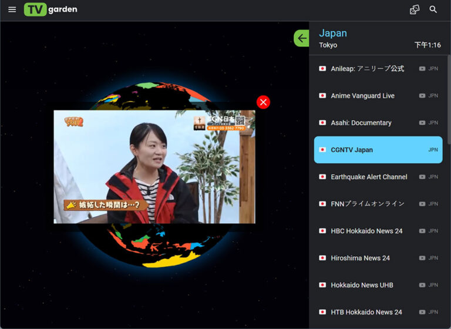
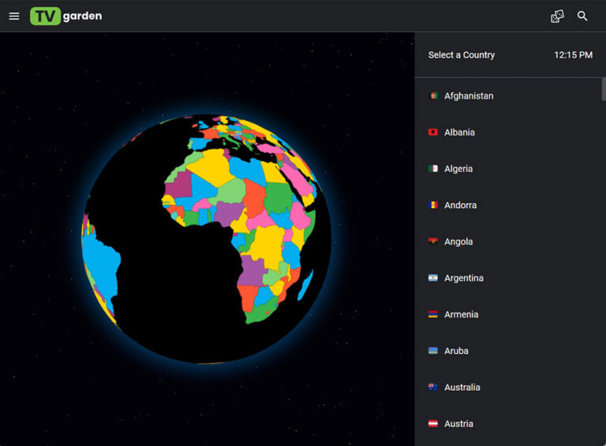

一盘装下全球直播：TV Garden 能力面完整盘点
从国家网格浏览到跨端投射、从收藏管理到 PWA 安装——TV Garden 不是又一个 IPTV 聚合站，它的设计取舍让全球直播这件事变得异常顺手。
免费全球直播聚合这条赛道从来不缺产品，但大多数走到最后要么沦为 M3U 播放器的皮肤，要么广告塞满整个屏幕。tv garden官网能在这个品类里站住脚，核心原因是它没有在"播得更多"上死磕，而是在"怎么播得顺手"这个维度上做了系统性的设计决策。这篇文章就把它的能力面完整铺开给你看——哪些是真正好用的、哪些有局限、什么样的人值得认真用它。

能力域一：全球频道的结构化浏览
TV Garden 的频道组织方式是它区别于同类产品最直观的一点。不是把所有台塞进一个无限滚动的列表让你搜，而是用国家网格 + 分类过滤两层结构帮你缩小范围。打开首页先看到一张按国家排列的网格，每个格子里标着该国家当前有多少个频道在播、多少个离线——点进去就是这个国家的频道列表，顶部还有 category filter 让你快速切 Sports、News、Entertainment 这些大类。
这种设计的好处是，当你知道自己想看哪个国家的内容时（比如追英超想看英国 Sky Sports、追美国大选想看 CNN），两步就能直达，不需要在几千个频道里翻找。反过来如果你没明确目标、只是想随便看看，国家网格本身就是一个低压力的入口——随便点一个数字大的国家，进去总不会让你空手而归。
更深一层的设计在播放器页面底部。每个频道的播放器下方有一个 Related Channels 区块，系统会自动推荐同国家或同类型的其他频道。它不是什么复杂的协同过滤算法——从tv garden文档里能看到官方没提推荐引擎、从实际观察看也只是同国家台的直接关联——但这一步刚好解决了一个高频痛点：点开一个频道黑屏、或者画面质量不行时，不用再返回国家列表重新找，往下滑四个备选台里大概率能挑到一个能播的。Related Channels 里没有状态标签，你点开之前不知道它能不能播，不过同国家频道的 Live 比例跟整体水平差不多，试两三个通常够用了。
能力域二：跨设备长时观看的稳定性设计
长时观看——一场两小时的球赛、一晚上的新闻频道——是直播聚合产品最容易暴露短板的场景。TV Garden 在这个场景下的设计是"让你不用花注意力在设备维护上"。手机端插着充电器、关掉自动锁屏是最基础的，更细的考虑包括：Android 上官方 APK 容易被系统内存管理后台杀掉，需要手动加到电池优化白名单或者在最近任务里锁定 APP；电脑端如果 Cast 到电视或者 HDMI 外接，合盖动作默认睡眠会断画面，需要在电源设置里改合盖动作为"不做任何操作"；Cast 时手机和 Cast 设备必须连同一个 Wi-Fi——2.4GHz 和 5GHz 混连能用上但性能差很多。
带宽层面的考虑也很实诚——直播流对实时性要求高，带宽被下载任务、云同步抢走一点就缓冲。官方建议关掉所有后台抢带宽的进程，Cast 场景下尤其是这样。电视端（Android TV / Fire TV）的建议就更朴素了：有线以太网比 Wi-Fi 稳、别盖布影响散热、遥控器放固定托盘里防沙发吞没。

能力域三：收藏与个性化的轻量设计
TV Garden 在个性化这件事上走的是轻量路线。收藏夹就是最核心的个性化——没有账号体系、没有复杂的标签分类、没有历史记录追踪，所有收藏直接存在浏览器的 localStorage 里。这种设计的好处是零门槛，打开网站就能收藏，不用注册不用登录；代价是数据不会跨设备同步，而且 iOS 上 Safari 和 Chrome 的数据相互独立。
当你需要"重新来过"时——收藏夹堆了一堆没看的、想从零开始，或者频道状态缓存出了问题（明明能播的频道一直显示 Offline）——有三种清理方式可以选。最精确的是 Chrome/Edge 地址栏锁图标 → 网站设置 → 清除数据，只清 TV Garden 这个域名不影响其他网站；开发者向的可以 F12 → Local Storage 手动删；如果用的是 Android APK，走设置 → 应用 → 存储 → 清除数据的路径。值得注意的是，不管怎么清，频道列表本身不会变少——列表来自 IPTV-ORG 社区的 M3U，每次访问都会拉最新的，清掉的只是你的缓存和偏好。
能力域四：安装与适配的务实取舍
TV Garden 没有在所有平台上追求原生 APP 的完整体验，而是根据每个平台的实际情况选了最务实的方案。
Android 上最完整的体验来自官方下载的 APK，播放器状态缓存、后台运行、电量优化白名单这些原生能力都能用上。iOS 则因为 App Store 对免费直播 IP TV 应用的审核限制上不了架，官方推荐的方式是 Safari 打开网站后点分享 → 添加到主屏幕，用 PWA 获得类原生体验：图标在主屏幕、点开全屏独立窗口没有地址栏。这个方案有几个 iOS 特有的限制——PWA 数据只在 Safari 里、Chrome iOS 不支持添加到主屏幕、系统会定期清理缓存可能丢收藏、Safari PWA 不支持画中画——但在 App Store 审核的硬约束下，这已经是最稳的方案了。App Store 上能搜到的同名 APP 不是官方开发的，只是用你自己的 HLS 链接播放的工具，别混为一谈。
桌面端最灵活，直接用浏览器访问就够——Chrome、Edge、Firefox 都能正常播，需要投射时走 Cast 或者 HDMI 都行。
短板也要说
上面铺了这么多好用的地方，局限性也得摊开讲清楚。
Related Channels 推荐逻辑非常朴素，只按同国家或同类型关联，没有"你可能喜欢"级别的个性化，长尾内容的发现成本还是高。iOS 侧的体验限制是平台硬约束带来的——没有原生 APP、没有画中画、缓存可能被系统清理，这些不是 TV Garden 不想做，是做不了。浏览器版的收藏数据只在 localStorage 里，换浏览器或换设备就是空白，没有跨设备同步确实是个实实在在的不便。另外，频道的 Live/Offline 状态偶尔会不准，特别是刚更新的频道，遇到这种情况除了刷新或者清缓存没有更好的办法。
什么样的人该用它
第一类是追海外体育赛事的人。英超、西甲、NFL 这些赛事在国内传统渠道覆盖不全，TV Garden 的全球频道矩阵刚好补上这个缺口——英国、美国、德国、西班牙的体育台在国家网格里都能找到稳定的 Live 源，Related Channels 的备选机制又帮你在主台黑屏时快速切到备台。
第二类是想稳定看海外新闻频道的人。CNN、BBC、Al Jazeera 这些频道的流媒体在国内访问经常遇到链路波动，TV Garden 聚合的是来自多个源的频道列表，同一个国家通常有几个版本的新闻台在播，一个不行换另一个的成功率很高。
第三类是有跨设备观看需求的家庭用户。手机 Cast 到电视、笔记本 HDMI 接客厅电视、卧室里用 iPad PWA 补——TV Garden 在每种设备上都有一套适配好的使用方案，不需要为每个设备单独找 APP 或者折腾配置。
写完这篇文章翻资料时顺手发现，同一套 TV Garden 的文档资料被维护者同步了三份：GitHub 主仓库更新最勤、Gitee 镜像在国内打开更快、GitCode 备份则让极端网络环境下也能拿到内容。